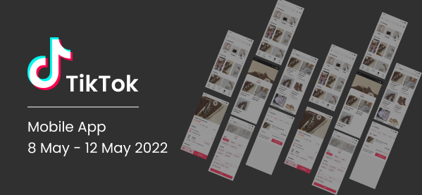
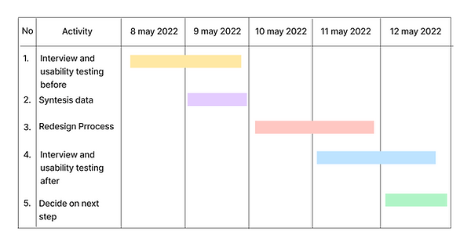
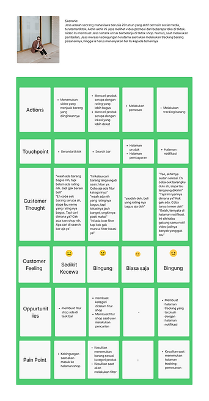
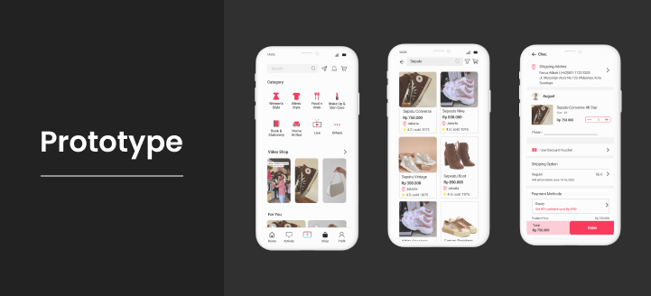

Tiktok Redesign
Design Improvements to the Tiktokshop Feature
Application : TikTok
Periode : 8 May - 12 May 2022
OverView
TikTok is a Chinese social network and music video platform launched in September 2016 by Zhang Yiming, the founder of Toutiao. The app allows users to create their own short music videos. The tikotok application provides several other features such as live streaming and features for shopping. Tiktok has a large number of users, but there are several features that confuse users, one of which is the shop feature. Therefore, it is necessary to redesign the tiktok shop feature to make it easier for users
Why redesign tiktok shop?
In tiktok shop feature, many users feel disappointed because the flow is too confusing, it's difficult to find the item tracking page, and can't filter when looking for items. So it’s needed development on the tiktokshop feature.
What role do I play?
I lead this project from the empathize phase to testing phase
Design Thinking

Timeline
Project Summary
In this project, usability testing and interviews were carried out first to find out how users interact with the application and find out user difficulties. Furthermore, from the data obtained, user problems are formulated. After that, the design process is carried out and then tested for the users
Completion process
- User Persona
- User Journey Map 
- The Problem
- There is no shop icon on task bar
- There is no filter feature
- Dificult to finde tracking item page
- There is no category
- The Solution
- There is shop feature on task bar
- There is a filter feature when the user searches for items
- There is a separate product tracking page from the notification page
- There are product categories
- Competitor Analysis
- High Fidelity 
- Conclusion


Based on the test results, there are still shortcomings from the prototype, especially in the icon section of the product tracking page. However, the results of the redesign of the TikTok shop application have made it easier for users to understand the flow, and make it easier for users to find features related to Tiktok shop.